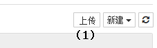
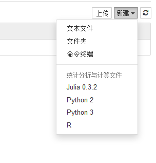
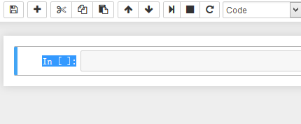
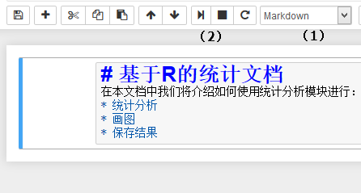
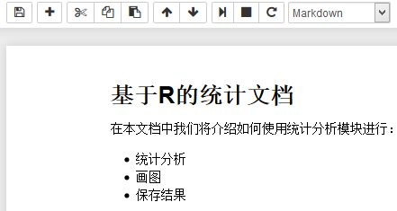
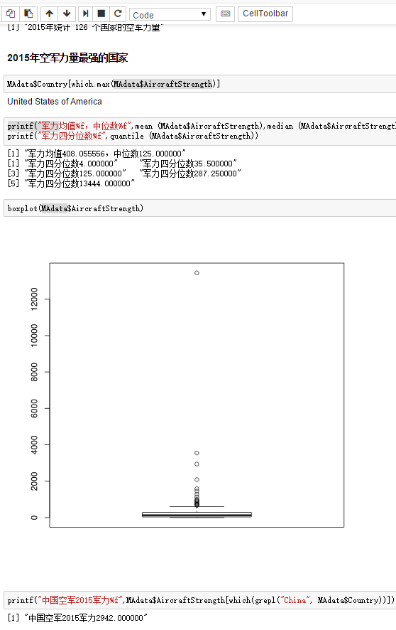
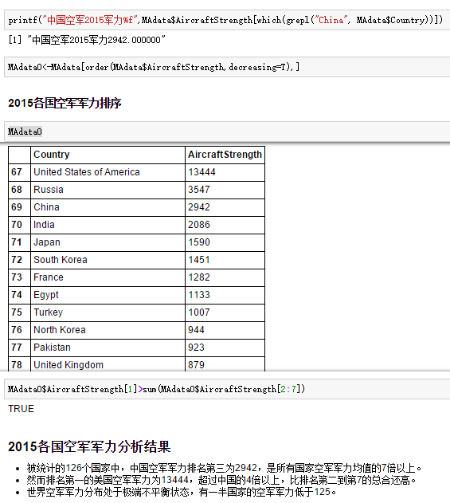
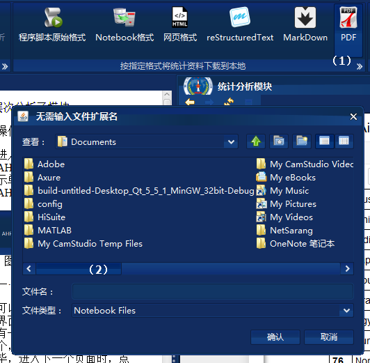

战略统计分析
点击工具栏“统计分析”按钮,如图1所示启动战略统计分析模块
图1. 启动战略统计分析模块
该模块的功能，主要包括：
例如我们要分析2015年各国空军力量数据信息，我们先将各国空军力量数据文件TotalAircraftStrengthData2015.cvs上传到服务器，如图2-0所示，数据格式形式如下
... Cuba,80 Denmark,74 Zambia,70 ....
在程序中点击工作区域右上角“新建”菜单，可以选择新建由何种语言编写的统计文档，如图2。

图2 新建统计文档
以基于R 的统计文档为例。使用者可以在图3（1）处编辑程序代码或者Markdown格式文档，然后点击(2)处运行按钮运行。

图3 基本运行模式
例如，我们在一号单元格输入标题文本和基本介绍，如图4

图4 Markdown文档编辑
然后我们点击图4 （1）处将单元格类型切换成Markdown文本格式，再点击（2）处运行，编译形成文档，其结果如图5所示。

图5 markdown文档编译结果
我们在新的单元格继续输入R程序
MAdata=read.csv("TotalAircraftStrengthData2015.csv")
MAdata
其运行结果如图6所示，可以读入数据
我们还可以继续进入后续的分析，如图7所示

图7 详细分析
包括可以直接在文档中以markdown格式输入分析结果，如图8所示

图8 结果分析
所有分析完成后，文档可以自动保存，也可以通过点击图9中相应格式的按钮下载你需要格式的分析报告。

图8 下载Markdown格式的分析报告